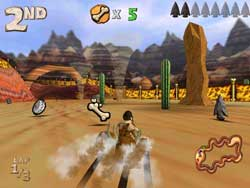
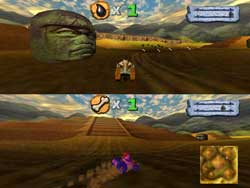

ABOUT THE GAME
ABOUT THE GAME
Cro-Mag Rally is a caveman racing game where you go through the Ages and try to defeat your opponents in various scenarios. You can race against your friends or the computer, and you can also play multi-player games like Tag, Capture the Flag, and Survival! The game may be played by a single player, two players on one computer, or up to 6 players over a network.
|  |  |  |
|||||||
|
Single Player Tournament mode in the Stone Age Desert
|
2-Player Tag mode in the Aztec City
|
Multi-Player Network play in the Ice Ramps
|
|||||||
There are 9 race tracks which are part of the main Tournament mode, and 8 additional tracks for the various multi-player modes.
During the races, players gather various powerups which can be used to help the player drive or to cause the opponents to crash.